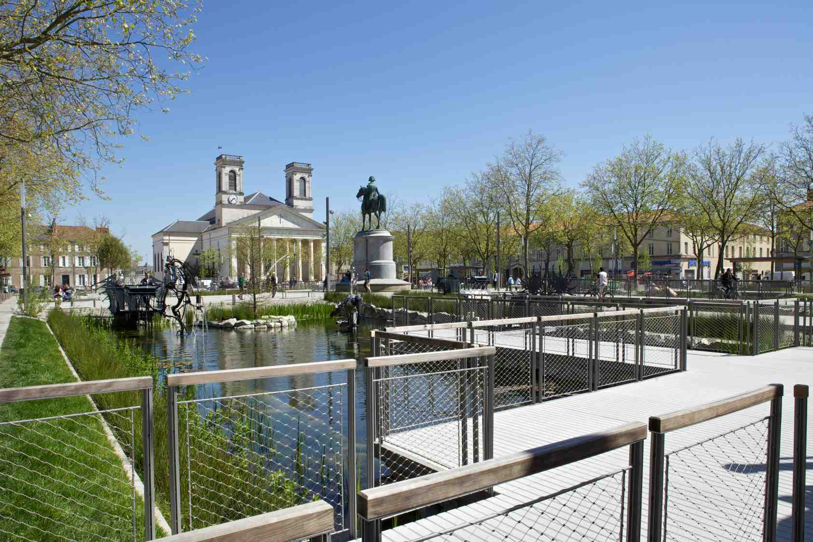

Survolez l'image et agrandissez/réduisez la vue à l'aide de la molette.
Budget: 5 548 668 € HT (place Napoléon), 1 365 445 € HT (restaurant), 3 170 129 € HT (rue Clémenceau et place de la Vendée)
Surface: 29 370 m2 (place Napoléon), 590 m2 (restaurant),18 765 m2 (rue Clémenceau et place de la Vendée)
Date début: 2010
Date fin: 2014
Maîtrise d'ouvrage: Ville de La Roche-sur-Yon
Co-traitant(s): bureau des paysages
Description:
Lieu de rassemblement aux dimensions exceptionnelles (140 m x 200 m), la place Napoléon est le symbole de La
Roche-sur-Yon. Véritable cœur de la ville, cette place réunit à elle seule, au centre du Pentagone, tous les enjeux de
la fondation du chef-lieu voulu en 1804 par Napoléon, lui assignant un rôle centralisateur et fédérateur en Vendée.
Au point le plus haut de cette nouvelle cité, une vaste esplanade est dessinée d’après un plan rectangulaire d’une
géométrique rigoureuse.
L’actuelle place Napoléon aimante les flux de circulation et les redistribue : les axes
partant de la statue de Napoléon sont des cheminements principaux dans la continuité des rues de la ville. Depuis
la gare, la rue Clémenceau devenue piétonne forme une diagonale privilégiée qui permet de rejoindre les principaux
commerces du centre-ville. Comment concevoir une mutation décisive de la place à partir de ses propres qualités
pour qu’elle devienne un paysage vivant, changeant selon les saisons, un nouveau lieu de convivialité et de
convergence ? La place transformée est un grand salon divisé en différentes pièces sans murs dont le volume est
déterminé par les façades des immeubles.
L’eau, vecteur de renaissance de la place, réunit et sépare des lieux dans
lesquels des évènements et des animations se tiennent successivement ou simultanément : sous le couvert
des arbres de l’esplanade, on peut garer des automobiles ou installer un banquet... A la fois fidèle à ses origines
et différente par ses usages, la place est métamorphosée.
{kind=link}
{kind=link}
{kind=link}
{kind=link}